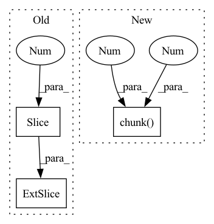

Pattern ID :16121

Before Change
// Define
b, c = t[:, :2].long().T // image, class
gxy = t[:, 2:4] // grid xy
gwh = t[:, 4:6] // grid wh
gij = (gxy - offsets).long()
gi, gj = gij.T // grid xy indices
After Change
offsets = 0
// Define
bc, gxy, gwh, a = t.chunk(4, 1) // (image, class), grid xy, grid wh, anchors
a, (b, c) = a.long().view(-1), bc.long().T // anchors, image, class
gij = (gxy - offsets).long()
gi, gj = gij.T // grid indices
In pattern: SUPERPATTERN
Frequency: 4
Non-data size: 3
Instances
Fragment ID: 54028272
Project Name: bobo-y/flexible-yolov5
Commit Name: 9fb058ef7b7925a243a436788f3f55dbb4b3e263
Time: 2022-07-02
Author: yl305237731@gmail.com
File Name: od/models/loss/yolo.py
M Class Name: ComputeLoss
N Class Name: ComputeLoss
M Method Name: build_targets(3)
N Method Name: build_targets(3)
M Parent Class:
N Parent Class:
M File Name: od/models/loss/yolo.py
N File Name: od/models/loss/yolo.py
M Start Line: 167
M End Line: 211
N Start Line: 178
N End Line: 226
'>
Before Change
area2 = box_area(box2.T)
// inter(N,M) = (rb(N,M,2) - lt(N,M,2)).clamp(0).prod(2)
inter = (torch.min(box1[:, None, 2:], box2[:, 2:]) - torch.max(box1[:, None, :2], box2[:, :2])).clamp(0).prod(2)
return inter / (area1[:, None] + area2 - inter) // iou = inter / (area1 + area2 - inter)
After Change
// inter(N,M) = (rb(N,M,2) - lt(N,M,2)).clamp(0).prod(2)
(a1, a2), (b1, b2) = box1[:, None].chunk(2, 2), box2.chunk(2, 1)
inter = (torch.min(a2, b2) - torch.max(a1, b1)).clamp(0).prod(2)
// IoU = inter / (area1 + area2 - inter)
return inter / (box_area(box1.T)[:, None] + box_area(box2.T) - inter)
'>
Fragment ID: 54028264
Project Name: ultralytics/yolov5
Commit Name: 406ee528f0fb78e6f814b9a53765bc54183f0a0b
Time: 2022-04-10
Author: glenn.jocher@ultralytics.com
File Name: utils/metrics.py
M Class Name: AnonimousClass
N Class Name: AnonimousClass
M Method Name: box_iou(2)
N Method Name: box_iou(2)
M Parent Class:
N Parent Class:
M File Name: utils/metrics.py
N File Name: utils/metrics.py
M Start Line: 268
M End Line: 273
N Start Line: 269
N End Line: 273
'>
Before Change
area2 = box_area(box2.T)
// inter(N,M) = (rb(N,M,2) - lt(N,M,2)).clamp(0).prod(2)
inter = (torch.min(box1[:, None, 2:], box2[:, 2:]) - torch.max(box1[:, None, :2], box2[:, :2])).clamp(0).prod(2)
return inter / (area1[:, None] + area2 - inter) // iou = inter / (area1 + area2 - inter)
After Change
// inter(N,M) = (rb(N,M,2) - lt(N,M,2)).clamp(0).prod(2)
(a1, a2), (b1, b2) = box1[:, None].chunk(2, 2), box2.chunk(2, 1)
inter = (torch.min(a2, b2) - torch.max(a1, b1)).clamp(0).prod(2)
// IoU = inter / (area1 + area2 - inter)
return inter / (box_area(box1.T)[:, None] + box_area(box2.T) - inter)
'>
Fragment ID: 54028268
Project Name: fcakyon/yolov5-pip
Commit Name: b9766c8f073d85d75c9b71b4ce6dc3e00f7e9184
Time: 2022-04-28
Author: 34196005+fcakyon@users.noreply.github.com
File Name: yolov5/utils/metrics.py
M Class Name: AnonimousClass
N Class Name: AnonimousClass
M Method Name: box_iou(2)
N Method Name: box_iou(2)
M Parent Class:
N Parent Class:
M File Name: yolov5/utils/metrics.py
N File Name: yolov5/utils/metrics.py
M Start Line: 267
M End Line: 272
N Start Line: 269
N End Line: 273